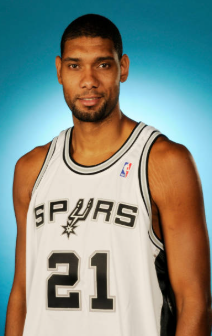
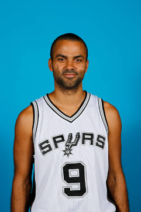
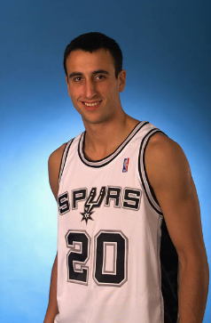
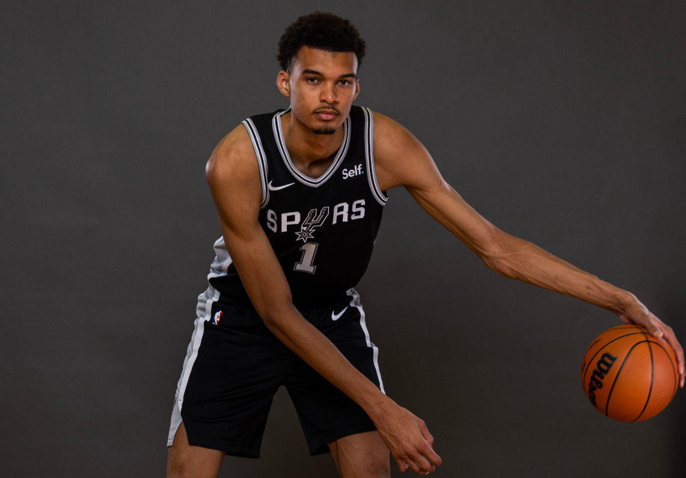
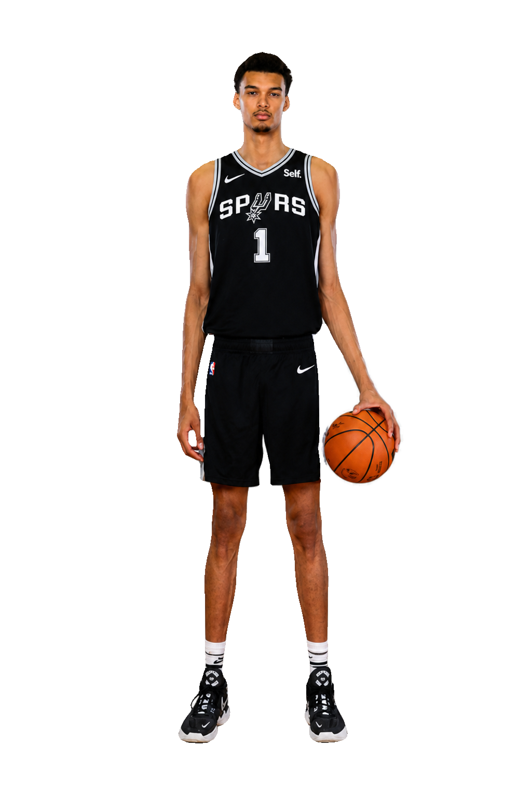

silové křídlo / pivot
Tim Duncan
Klidný lídr, základ obrany a tvář pěti mistrovských týmů.
Velký základJiní než ostatní Fanouškovský školní mikroweb
Tým na prvním místě. Vždy.
Pět titulů, generace legend a basketbalová kultura postavená na důvěře, disciplíně a chytré týmové hře.
Stříbrná a černá
Spurs reprezentují San Antonio od roku 1973. Klub si vybudoval pověst organizace, která dává tým nad jednotlivce a dlouhodobou práci nad rychlá řešení.
Černá, bílá a stříbrná nejsou jen barvy. Vyjadřují jednoduchost, soustředění a profesionální identitu týmu.
Dobrá přihrávka vytváří další dobrou přihrávku.
Mistrovský standard
Každý titul patří do jiné kapitoly, ale všechny spojuje stejná DNA: obrana, trpělivost a týmová odpovědnost.
Od ABA k pěti prstenům
Od příchodu do San Antonia přes první titul až po basketbalovou lekci z roku 2014. Spurs rostli díky kontinuitě a jasné klubové filozofii.
Dallas Chaparrals se stěhují a vzniká značka San Antonio Spurs.
Spurs se spolu s dalšími kluby ABA připojují k NBA.
První volba draftu mění budoucnost celé organizace.
San Antonio získává první titul a potvrzuje sílu podkošových dvojčat.
Pohyb míče a týmová souhra vrcholí pátým mistrovským titulem.
Victor Wembanyama přichází jako první volba draftu.
Velká trojka
Tři odlišné basketbalové osobnosti, které se doplňovaly téměř dvě desetiletí.

Klidný lídr, základ obrany a tvář pěti mistrovských týmů.
Velký základ
Rychlost, průniky do vymezeného území a kontrola tempa.
Nejužitečnější hráč finále 2007
Kreativita, odvaha a energie hráče, který přijal roli šestého muže.
Nebojácný soupeř
Další kapitola
Jednička draftu 2023 přinesla do San Antonia mimořádnou kombinaci výšky, pohybu, střelby a obranného instinktu. Je symbolem nové éry, která navazuje na týmové hodnoty Spurs.
Jak vysoký je Wemby?
Victor Wembanyama: 224 cm / 7 stop 4 palce
Zadej svou výšku a podívej se na skutečný poměr vedle stylizované postavy vysokého basketbalisty.

Victor je o 49 cm vyšší.
Jsi 78,1 % Victorovy výšky.
Siluety mají společnou základní čáru a jejich výška se počítá poměrem k 224 cm. Jde o stylizaci, nikoli anatomický model.
Proč Spurs?
Úspěch Spurs není postavený na jediné hvězdě. Vychází ze způsobu, jakým organizace přemýšlí, vybírá hráče a buduje vztah s městem.
Míč se pohybuje rychleji než hráč. Správné rozhodnutí má přednost před osobní statistikou.
Stabilní hodnoty umožnily různým generacím navazovat na stejný basketbalový základ.
Spurs dlouhodobě hledají talent a inspiraci daleko za hranicemi USA.
Klub a město sdílejí hrdost, komunitu a nezaměnitelnou identitu oblasti 210.
Černostříbrná atmosféra
Věděli jste?
Série účastí v play-off v letech 1998–2019 vyrovnala rekord NBA.
Duncan, Parker a Ginóbili reprezentovali Americké Panenské ostrovy, Francii a Argentinu.
David Robinson a Tim Duncan vytvořili jednu z nejslavnějších podkošových dvojic.
Rychlé odpovědi
Základní fakta pro nové fanoušky černé a stříbrné.
San Antonio získalo pět titulů NBA: v letech 1999, 2003, 2005, 2007 a 2014.
Mezi nejvýraznější jména patří Tim Duncan, David Robinson, Manu Ginóbili, Tony Parker a George Gervin.
Jde o označení týmového stylu založeného na rychlém pohybu míče, prostoru, chytrých rozhodnutích a hledání nejlepší střely.
Ne. Jde o nekomerční školní fanouškovský projekt bez oficiálního spojení s NBA nebo San Antonio Spurs.
Do toho, Spurs!
Objev tým, který ukázal, že dlouhodobý úspěch začíná důvěrou, charakterem a ochotou sdílet míč.
Poznej Spurs